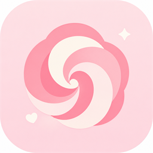
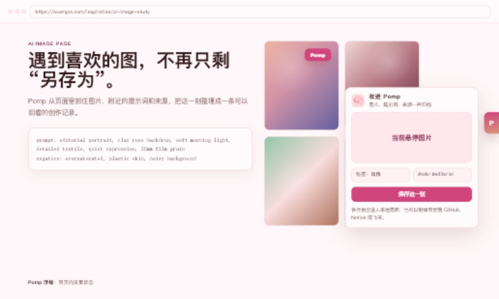
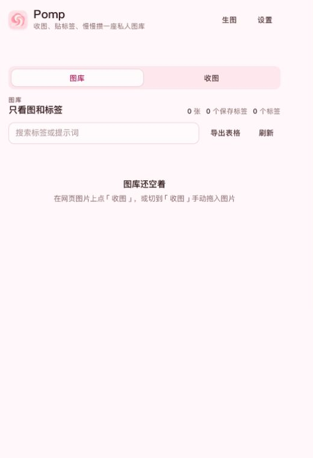
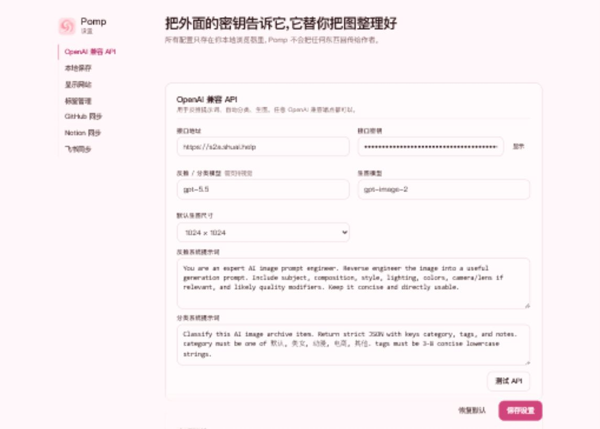

在网页里收住灵感
浮标、图片悬浮按钮和右键菜单都服务同一个动作：把眼前这张图留下来。

Pomp GitHubWorkflow
浮标、图片悬浮按钮和右键菜单都服务同一个动作：把眼前这张图留下来。
提示词、反向提示词、来源链接、分类和标签都跟着记录走，少一点事后补账。
本地 IndexedDB 保存，按标签检索、导出、同步，给未来的自己留一条清楚的线索。
Product screenshots



Made for collectors
Pomp 更像放在创作工作台上的小物件：信息密度够高，动作够短，文案像作者写给作者的便签。
Archive targets
图片写入 images/，记录写入 records/，适合做长期归档。
一张图一条记录，Prompt、Category、Tags、Source URL 保持可检索。
把 AI 图收藏变成团队也看得懂的结构化表格。
Start collecting